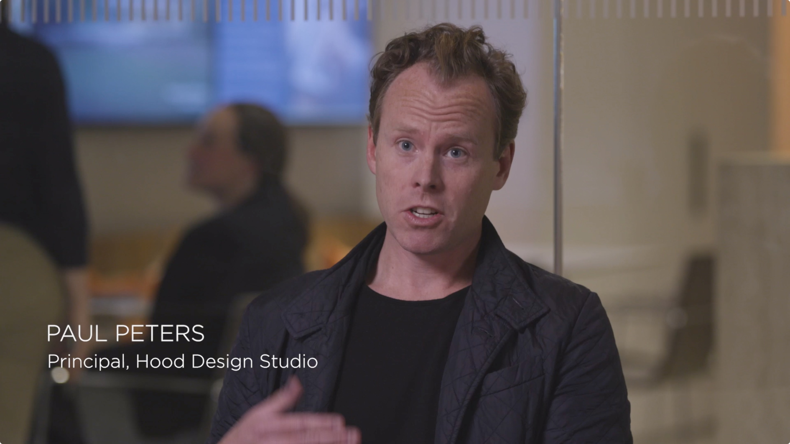

Learn more about the Proposals
Adjacent to the National Mall, the Tidal Basin comprises the beloved blossoming cherry trees and monuments to leaders such as Thomas Jefferson and Martin Luther King, Jr. Its beauty is matched by the complexity of its many meanings, as experienced by diverse audiences. Yet, despite its storied place in the national imagination, the Tidal Basin is very much at risk. The instability of the land underneath, daily flooding, and crumbling infrastructure threaten its future.
To rescue and transform the nation’s most iconic memorial landscape, we must balance preservation with the realities of climatic, geological, and social changes. So profound are the effects of these forces that conventional responses—rebuilding infrastructure or adding safeguards such as seawalls—will only delay, but not prevent, the submersion of the Tidal Basin and its monuments under water. The challenges are undeniably steep, but they are not insurmountable. We have imagined bold moves and charted courses of action to be realized over the coming century. Yet, our work is not merely reactive to current and projected conditions, nor is it only a search for solutions to specific problems. It is an opportunity to posit new ways of thinking about ecology, social space, narratives, and experiences, pushing forward our understanding of what memorials and public landscapes can be. The time to begin this process is now.
James Corner
James Corner Field Operation
Jennifer Guthrie
GGN
Susannah C. Drake
DLANDstudio
Gary Hilderbrand
Reed Hilderbrand
Walter Hood
Hood Design Studio